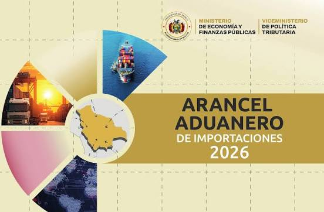
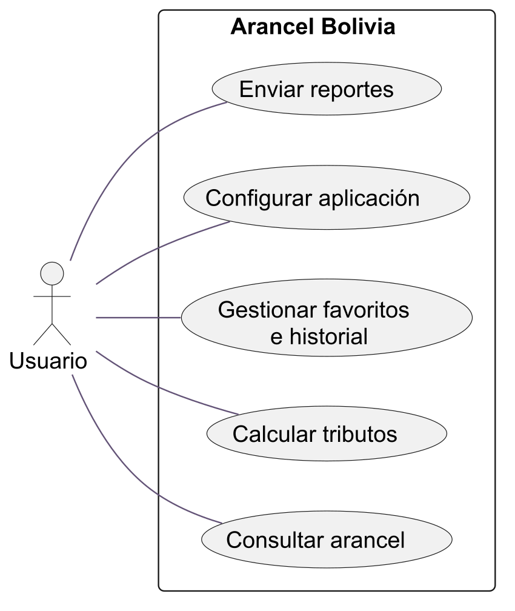
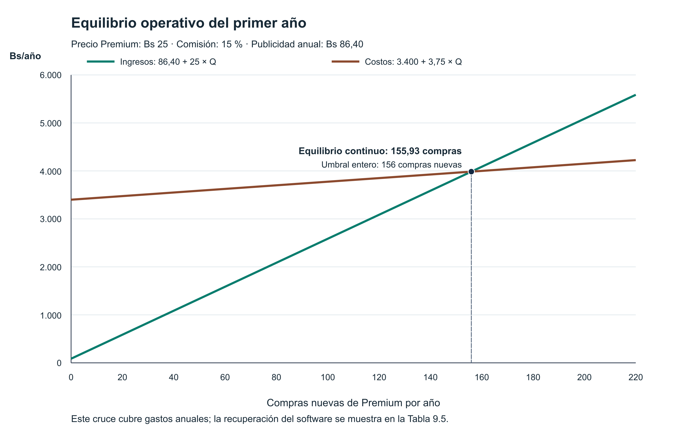
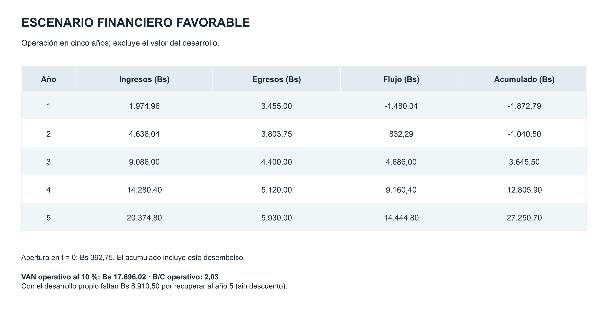
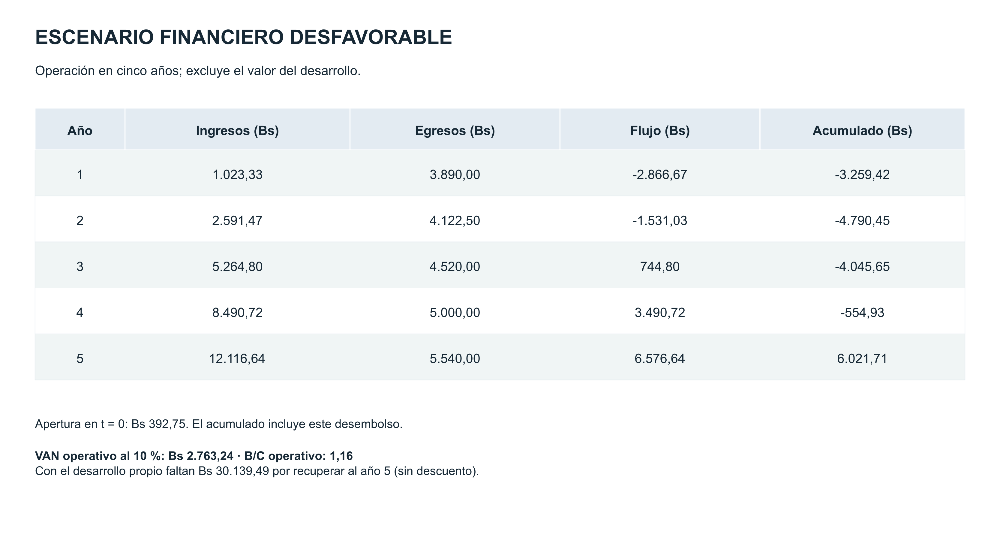
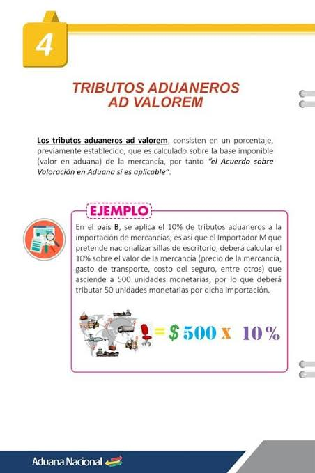
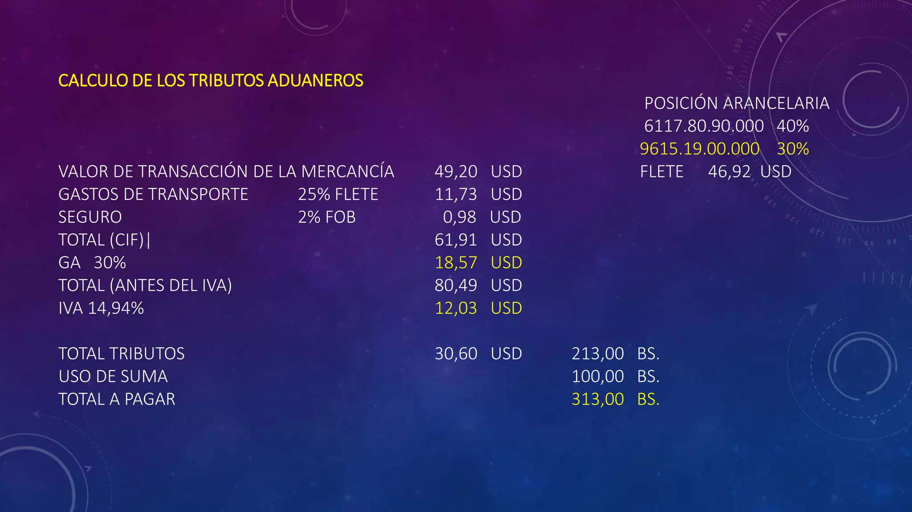

Técnica
Flutter y Dart organizan la interfaz y la lógica. SQLite conserva el catálogo y permite consultar y calcular sin conexión permanente.
Consulta de partidas y cálculo de tributos en una aplicación móvil con enfoque educativo.
26 formularios de perfil: 14 estudiantes, 1 operador, 3 importadores y 8 de otros perfiles. No acreditan demanda ni intención de compra.

Desarrollar una aplicación móvil para la consulta de partidas del arancel aduanero de Bolivia y el cálculo de tributos correspondientes, con el propósito de optimizar el acceso a información arancelaria para estudiantes, profesionales del área de comercio exterior y demás usuarios interesados, mediante una herramienta digital accesible y de uso eficiente.
Flutter y Dart organizan la interfaz y la lógica. SQLite conserva el catálogo y permite consultar y calcular sin conexión permanente.

La consulta gratuita y las ayudas de términos apoyan el uso educativo de estudiantes, docentes y profesionales de comercio exterior.

Publicidad, Premium de pago único y apoyo voluntario permiten evaluar el sostenimiento. Se separan operación, apertura y trabajo de desarrollo.
Cinco meses de desarrollo presupuestado. El lanzamiento comercial y los cinco años de operación se planifican por separado.


Quienes consultan el arancel necesitan localizar partidas, comprender notas y revisar tributos sin depender de un documento extenso.
| Perfil | n | % |
|---|---|---|
| Estudiantes | 14 | 53,85 % |
| Operadores | 1 | 3,85 % |
| Importadores | 3 | 11,54 % |
| Otros | 8 | 30,77 % |
| Total | 26 | 100 % |
El 77 % declara conocer términos aduaneros. Muestra por conveniencia: no mide demanda ni disposición de pago.
La difusión prioriza canales propios y contactos académicos, sin pauta pagada.
Preparación y lanzamiento en el mes 1; difusión y contenido de los meses 2 a 6.
Metas de planificación, todavía no resultados observados.

Un actor, Usuario, participa en cinco funciones principales:
Los 15 requisitos funcionales detallan estas operaciones.
Consulta, búsqueda, cálculo, documentos, favoritos e historial con publicidad.
Los anuncios dependen de sesiones conectadas. El apoyo voluntario por Ko-fi o QR no desbloquea funciones.
Las mismas funciones, sin publicidad, mediante un pago único supuesto de Bs 25.
El modelo usa una comisión del 15 %: Bs 3,75 por compra y Bs 21,25 netos para la operación.
Ambas ediciones conservan las mismas funciones. El pago retira la publicidad.
Año 1 base: 900 activos gratuitos, 50 compras nuevas y Bs 86,40 de publicidad. Son supuestos comerciales pendientes de validación.
| Destino | Monto Bs |
|---|---|
| Apertura: registro y logo | 392,75 |
| Reserva de caja | 11.607,25 |
| Capital en efectivo | 12.000,00 |
Aporte propio: Bs 7.500. Apoyo familiar: Bs 4.500, sin devolución modelada. Los aportes financian la actividad y no son ventas.
Bs 36.161,20 por cinco meses completos estimados de trabajo individual, equivalentes a 760 horas.
USD 662,90 por mes × 5 × Bs 10,91/USD. Es valoración del trabajo propio, sin salida bancaria.
13,06 KLDC, 49,59 persona-mes y 12,70 meses paramétricos. Es una referencia y no se suma otra vez al costo del software.
Operación antes de comisión: Bs 3.400 al año. La reserva cubre déficits iniciales.
Inversión inicial valorada: Bs 48.161,20 entre efectivo y software. Balance después de apertura: Bs 47.768,45.
| Concepto | Año 1 | Año 2 | Año 3 | Año 4 | Año 5 |
|---|---|---|---|---|---|
| Ingresos Bs | 1.336,40 | 3.353,60 | 6.740,00 | 10.836,00 | 15.432,00 |
| Egresos Bs | 3.587,50 | 3.880,00 | 4.375,00 | 4.975,00 | 5.650,00 |
| Flujo anual Bs | −2.251,10 | −526,40 | 2.365,00 | 5.861,00 | 9.782,00 |
| Escenario | Supuestos principales | Acumulado | VAN operativo |
|---|---|---|---|
| Favorable | Adopción +20 %, costos −5 % y apoyo neto | 27.250,70 | 17.696,02 |
| Base | Proyección central, sin apoyo voluntario | 14.837,75 | 8.979,61 |
| Desfavorable | Adopción −20 %, costos +10 % y sin apoyo | 6.021,71 | 2.763,24 |
Gastos anuales cubiertos: año 3. Apertura y operación recuperadas: año 4.
VAN al incluir el desarrollo propio: −Bs 31.581,65
Al año 5 faltan Bs 21.323,45 para recuperar el desarrollo y la apertura, sin descuento. Los acumulados y VAN de la tabla son operativos. Flujos antes de tributos y remuneración recurrente.

| Momento | Saldo Bs |
|---|---|
| Desarrollo + apertura | 36.553,95 |
| Año 1 | 38.805,05 |
| Año 2 | 39.331,45 |
| Año 3 | 36.966,45 |
| Año 4 | 31.105,45 |
| Año 5 | 21.323,45 |
Tabla 9.5. Desarrollo propio: Bs 36.161,20. Apertura: Bs 392,75. Los déficits aumentan el saldo pendiente.
La proyección base no recupera toda la inversión en cinco años
El año 8 es solo una prolongación hipotética del excedente del año 5, sin nuevos gastos ni descuento.


La aplicación integra consulta y cálculo dentro del alcance definido. Su continuidad exige ampliar la evaluación técnica y validar el negocio.

